梅吉と毎日桜を見る会 [梅吉]
ベランダの桜盆栽が見頃になってきました＾＾
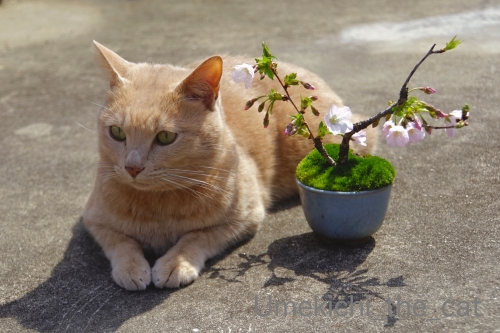
4月7日。まだ４部咲きくらいでしょうか。
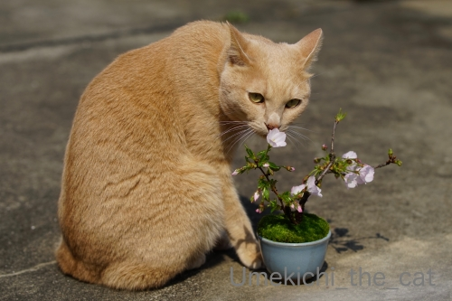
4月8日。くんくんくんくん・・・・・
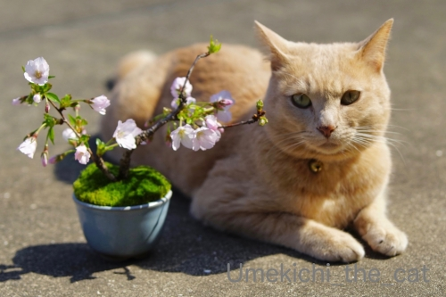
4月9日。もう一息かな。
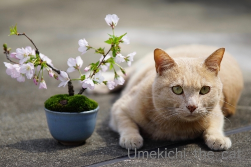
4月10日。満開です(≧▽≦) 目つき悪いな(*>艸<)
この桜は御殿場桜。
暖かい日はベランダに出て桜と梅吉を眺めながらコーヒーを飲んでまーす＾＾
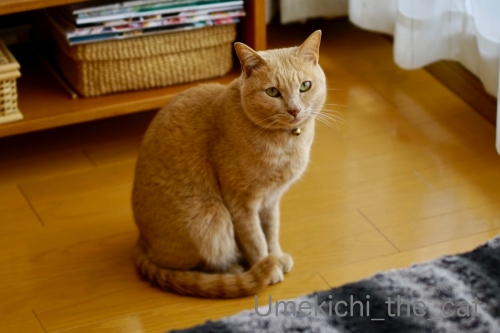
梅吉もそれを楽しみにしているようで
![[猫]](https://blog.ss-blog.jp/_images_e/101.gif) べらんだに いくで！
べらんだに いくで！
という催促の視線がすごいwww
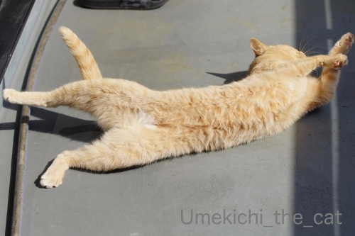
お外の開放感は格別ですかー！！
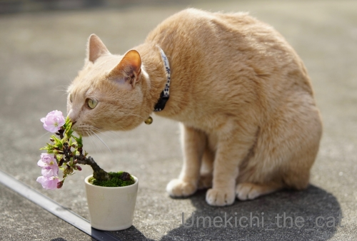
4月11日。
満開になった旭山桜と。

ベランダの桜が散ったら我が家のお花見は終了です。
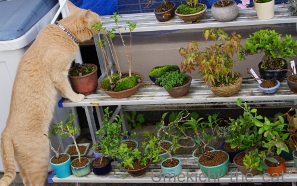
実は梅吉さんは花より探検！
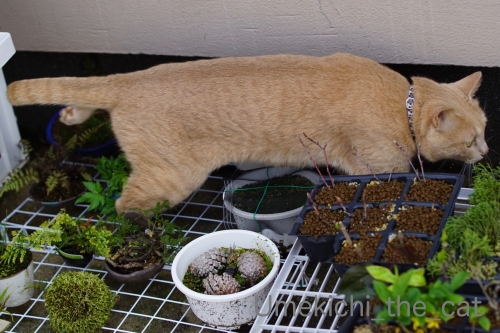
特に狭いところが楽しくてしょうがないらしい。
＊＊＊＊＊＊＊＊＊＊＊＊＊＊＊＊＊＊＊＊＊＊＊＊＊＊＊＊＊＊＊＊＊＊＊＊＊＊＊
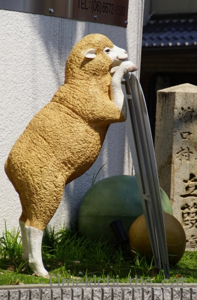
以前話題にしたこの羊のオブジェ、ここで見つけました (≧▽≦)
お値段64.900円也。
宝くじが当たったら買おうかしら＾＾
買ったらベランダに置きますが、外を向く様に置くか（家の中からおちりが見える）
窓から家を覗き込むように置くか（常に目が合う）妄想してニヤニヤしてますwww
この羊さん、商品紹介ページで使われている写真の一枚が
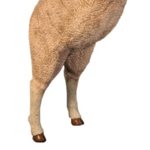
この写真なんですけれども！
担当者の方は相当な動物変態、同志だなと思った次第です (≧▽≦)
色々なオブジェを扱っているサイトですが恐竜シリーズが秀逸です。
３メートル近くあるなんちゃらサウルスとか恐竜の頭骨とか！
そこの恐竜好きなあなた！（笑）是非是非見てください( ´艸｀)
 ↑ガブッと一押し↑
↑ガブッと一押し↑
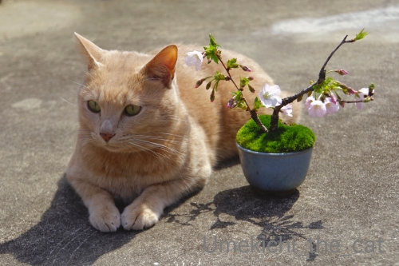
4月7日。まだ４部咲きくらいでしょうか。
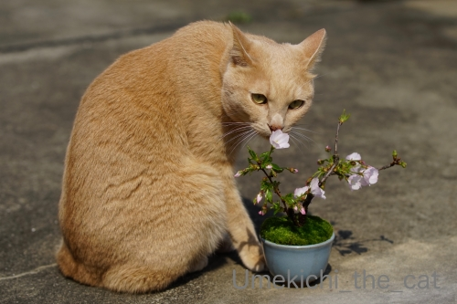
4月8日。くんくんくんくん・・・・・
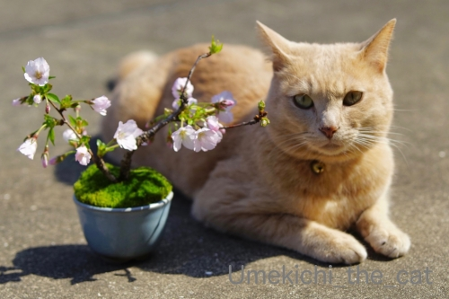
4月9日。もう一息かな。
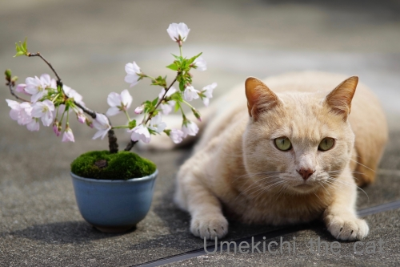
4月10日。満開です(≧▽≦) 目つき悪いな(*>艸<)
この桜は御殿場桜。
暖かい日はベランダに出て桜と梅吉を眺めながらコーヒーを飲んでまーす＾＾
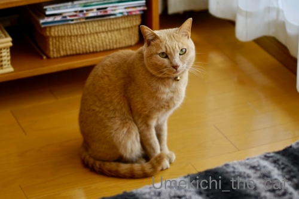
梅吉もそれを楽しみにしているようで
という催促の視線がすごいwww
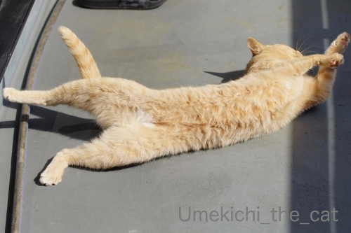
お外の開放感は格別ですかー！！
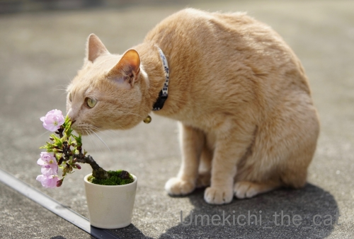
4月11日。
満開になった旭山桜と。
ベランダの桜が散ったら我が家のお花見は終了です。
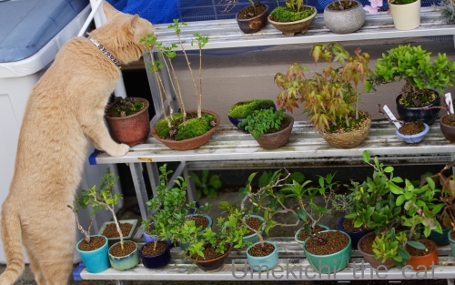
実は梅吉さんは花より探検！
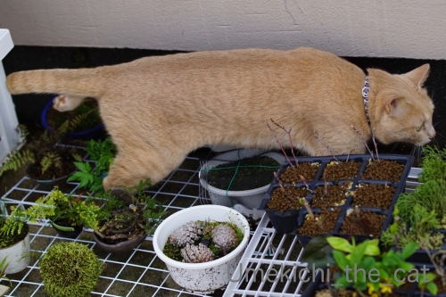
特に狭いところが楽しくてしょうがないらしい。
＊＊＊＊＊＊＊＊＊＊＊＊＊＊＊＊＊＊＊＊＊＊＊＊＊＊＊＊＊＊＊＊＊＊＊＊＊＊＊
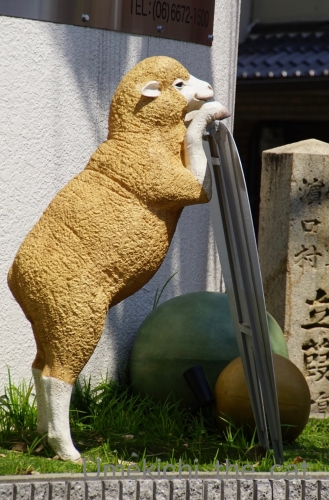
以前話題にしたこの羊のオブジェ、ここで見つけました (≧▽≦)
お値段64.900円也。
宝くじが当たったら買おうかしら＾＾
買ったらベランダに置きますが、外を向く様に置くか（家の中からおちりが見える）
窓から家を覗き込むように置くか（常に目が合う）妄想してニヤニヤしてますwww
この羊さん、商品紹介ページで使われている写真の一枚が
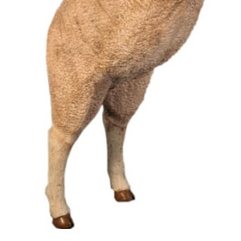
この写真なんですけれども！
担当者の方は相当な動物変態、同志だなと思った次第です (≧▽≦)
色々なオブジェを扱っているサイトですが恐竜シリーズが秀逸です。
３メートル近くあるなんちゃらサウルスとか恐竜の頭骨とか！
そこの恐竜好きなあなた！（笑）是非是非見てください( ´艸｀)

カフェオレ色の梅吉

梅吉 2023年8月10日 永眠


梅吉と出会った譲渡会

犬猫の理由なき殺処分ゼロ
妄想広告
UMEKICHI 光

爆発的に早い！
時々攻撃的！
Thanks to Mr.Boss365
爆発的に早い！
時々攻撃的！
Thanks to Mr.Boss365

盆栽桜可愛いです~。いくつもあったのですね。
梅吉さん鉢をひっくり返さないのいい子です。ウチの奴らだったらもう悲惨ですよ。
羊さんやっぱり売ってたんだ。でも高いー。
恐竜も見てきたけど家を建てることがあったら(ないない)玄関に置きたい。
by zombiekong (2020-04-13 00:30)
こんにちは。
お外で「梅吉君と梅」良い写真ですね。
4月10日、満開時のスタイル！！土下座？スタイル風で・・・・
「如何でしょうか？」の真剣な眼差しがナイスです（爆）
盆栽、沢山ありますね。やってみたいけど・・・
ルーフバルコニーないので難しい状況。羨ましい！！
羊のオブジェ！！微妙な値段ですが・・・
ビジネスベースだとお安いですね。面白いサイトです。
将来の為にブックーマークしました（爆）
梅吉君のオブジェを特注で制作依頼してみたいですね？
同じポーズで「好奇心の旺盛なブタさん」を発見（爆）です！？(=^･ｪ･^=)
by Boss365 (2020-04-13 01:06)
梅吉さんと桜盆栽可愛いですねぇ＾＾☆
by miyoko (2020-04-13 02:45)
桜盆栽と梅吉さん、いいニャ～
羊のオブジェ結構高いんだねw
ちなみに、本物の羊はオスが70,000～120,000円でメスが80,000～150,000円だそうです。
てゆーか、一般人は羊は買わない(飼わない？)か（ﾟ□ﾟ）
by 英ちゃん (2020-04-13 03:27)
お庭に桜の木があったら毎日花見が出来て良さそうですけど
花を楽しむ期間よりも毛虫と戦う期間の方が長くなりそうで（爆）
鉢植えなら毛虫も付かない？
by ぽちの輔 (2020-04-13 06:41)
リンク先のサイト見ました！！
恐竜もいいけど、家で置いとくにはかさばりそうなんで
お手頃サイズのターミネーターの鋼鉄の頭部が欲しい！
7～8万円もするけど、ポチしてしまいそう(￣◇￣;)
by よーちゃん (2020-04-13 07:54)
4枚目の梅吉さん、何かを狙っている野生の目に見えました！でも、上手に避けて探検してますね(^_^)
猫さんは本当に探検が好きですよね。我が家にも多数の猫が探検に来ます。屋根の上でも走り回って、バタバタと音がしたり、時々隅っこにお土産を置いていったり・・・(^_^;)
by kou (2020-04-13 08:09)
梅と桜の奇跡のコラボシリーズ♪
また来年もベランダお花見ができるといいですね。
盆栽の隙間を縫って探検の梅吉さん、蹴散らかさないでちゃんと
よけてすり抜ける身のこなしが目に浮かびます。
羊オブジェ！ やはり専門店があったのですね(笑
むちっとした太もも、やや内股の構え、蹄のリアル感、描写が海洋堂レベルの緻密さ♪
昨夜の「ダーウィンが来た」で恐竜編だったので、とても興味深く拝見。
等身大？のなんちゃらサウルス達が勢ぞろいされてましたねｗ
by marimo (2020-04-13 08:09)
梅吉さんと過ごすベランダは
笑顔が溢れていますね(#^.^#)
ひつじさん以外にも
たくさんのオブジェが！！
いろいろな種類にビックリです！
by きぃ (2020-04-13 08:14)
こんにちは！
”猫に小判”と言いますがニャンに植木鉢。
お花の香りが分かるのかな、嗅いでいますね（"＾ω＾）
by Take-Zee (2020-04-13 10:09)
羊さんは結構良いお値段するのですね！
梅吉さん桜盆栽の香りを楽しんでいるのですね。
by ma2ma2 (2020-04-13 10:19)
盆栽桜、素敵ですね♪
おうちでお花見、しかも梅吉さんと一緒に(#^^#)
ひっくり返さないのは本当に賢いです！！
羊のオブジェは完成度が高いと思ったら本格的に制作しているお店なのですね。
中でも羊さんの立ち姿は秀逸(#^^#)
「水辺のジャガー」など玄関先に置いたら泥棒除けによさそう♪
キリン欲しいけど置けない・・。
仮面ライダーは相方が欲しがると困るので黙っておこう・・。
こてつと一緒にいるお花のついた水色のカバ。
ワンコ用と遊ぶ用のマペットで、ホームセンターに並んでます^^
下僕の手を噛みたがるこてつ対策に買ったのですが、マペットを装着していると噛みつかかず・・(-_-;)
今は早食い防止のため、カバの口の中にカリカリを隠したりして遊びながらオヤツをあげるのに使ってます。
by ゆきち (2020-04-13 10:31)
梅と桜で春満載って感じー。
ベランダでのーーびのびの梅吉さんが、見てるだけで和みます。
しかも！またもやしっぽも見事に伸びてます。
この窮屈なご時世、一家に一ニャン梅吉さんが必要でございますなぁ。
羊オブジェ！売っているお店があったのですね。
一体、どのくらい売れて、どこに置かれているんだろう。羊オブジェマップとか作って、見て回るのも楽しいかも。
うん、その作り、もう、動物変態ならではですね。
by ChatBleu (2020-04-13 11:16)
梅吉くんのベランダでのおっぴろげ〜〜〜写真に癒やされていたら
なななんと！
羊さんの怪しいアングルがｗｗ
これ絶対同士だよね(笑)
あー、おまたぺしぺししたい！
・・・恐竜？？？？
ってことでリンク先行ってみたら、テンションUPですよ！
肉食恐竜がいいなー。
ディノニクスも惹かれる。でも骨好きとしてはディノニクス・スケルトンかなあｗｗ
卵から出てきたシリーズも可愛いなあ
by リュカ (2020-04-13 16:03)
ベランダで桜と梅吉さん見物、ほっこりできる素敵な時間ですねぇ♪( ´▽｀)
天気の良い日のベランダは気持ち良いだろうなぁ( ^ω^ )
思いっきり広げてる梅吉さんのお腹にダイブしたい（≧∇≦）
羊オブジェ、週替わりで向きを変えるのはいかがですか*\(^o^)/*
by ニッキー (2020-04-13 16:25)
お〜 my桜 良いっすねぇ
俺も来年は買おう
by (。・_・。)２ｋ (2020-04-13 16:44)
そんなに沢山植木鉢が並べてあってイタズラしないんですか？
うちだったらあっという間に尻尾でワッシャワッシャなぎ倒さ
れそうです。梅吉さん、お利口ですね(*´ω｀)
by mio (2020-04-13 18:18)
私も前にちぃさんの記事を見て、旭山桜買っちゃいました。
母の日用なので、5月に咲くように調節されているそうで
これから第二の花見が待っています＾＾
今から楽しみ。
倒さず探検の梅吉さんさすがです。
そして桜と記念写真お似合い♩
by ふにゃいの (2020-04-13 21:26)
お鉢の隣できちんとポーズを取る梅吉さん、素晴らしいです！^^)
なかなかこう上手く撮れないと思います。
羊オブジェ、た、高い。。。
コーヒーカップにもたれるくらいのミニチュア版なら買ってもいいかなぁ。^^;
by yes_hama (2020-04-13 21:29)
今年は盆栽の桜が良く売れたそうです
梅吉君、桜とのツーショットが素敵♪
お日様の香りをたのしんでいるような梅吉君
ベランダに行くのが楽しみなんですね～
by 藤並 香衣 (2020-04-14 00:00)
桜盆栽と梅吉さん良くお似合い♪
コーヒー飲みながら眺めるなんてまさに至福の時間です。
そして植木鉢のすき間を歩く・・・
倒さないかひやひやしますがそこはプロなんでしょう(^^♪
by yamatonosuke (2020-04-14 01:01)
私もリンク先のサイト、見ました～。
とっても面白かったです！
ひつじさん、いつ買うんですか？（笑）
by angie17 (2020-04-14 13:05)
桜、可愛いですね～。
梅吉さん、立派なモデルっぷり！
ベランダで過ごすのをを楽しみにしているだけあります^^
羊さんのオブジェ、面白～い！
恐竜…？ ヴェロキラプトル絶対にやだ！と思いつつ、何度も見ちゃいました。
トリケラトプス、やけに派手でしかも悪顔…可愛いイメージだったのに。恐竜は色があったらしいんだけど、何色かはわかってないんですよね？^^;
by sana (2020-04-14 18:42)
春の日差しと梅と梅吉さんの取り合わせがステキです。
最後の羊の写真から、生ハム（のかたまり）を想像してしまいました…
by liang (2020-04-14 20:59)
桜の盆栽お洒落ですね(^^♪
梅吉さんが羊に～(^^)
by 50oyaji (2020-04-14 21:29)
梅吉さん、桜の香りまでしっかり堪能ですね＾＾。粋な楽しみ方。
盆栽で桜、なんて素敵な。 こういう育て方もあるんですね。
小さな鉢が並んだ段々、植物園のようです♪
白いソックスを履いたような羊さんの脚、なんとも言えず可愛いなぁ。
by Inatimy (2020-04-15 00:10)
羊さんと梅吉さんとコラボ^^宝くじ当たる予感します。
by ニコニコファイト (2020-04-15 07:06)
そうです タバコ吸ってるのが俺っす（＾＾）
良くわかりましたね みんなジョージクルーニと見間違えるのに
by (。・_・。)２ｋ (2020-04-15 15:07)
こんにちは。
U社の画像をご自由にお使い下さい！！全く問題なしです。
サイズが300 × 600ピクセルなので・・・
張り付け設定数値をURLファイル上で変更してお使い下さい。
多分、200×400位？だと思います！？(=^･ｪ･^=)
by Boss365 (2020-04-15 17:10)
この桜を見る会なら出席させていただきたいですww
しかも梅ちゃんがついてくるっ（ΦωΦ）ふふふ
いい光景を見ながらのコーヒータイム、ステキです❤︎
この羊さんのオブジェ、なんとも魅力的ですよね。
ちょっとぽっこりしたお腹とか、内股なあんよとか
白ソックスとか．．．(ﾟｰ,ﾟ*)ｼﾞｭﾙﾙﾙ
私も変態度高いっ(///ω///)
by カトリーヌ (2020-04-26 22:30)